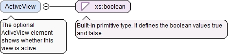

The optional ActiveView element shows whether this view is active.
Diagram

Type
xs:boolean
Properties
content
simple
minOccurs
0
default
false
Source
<xs:element name="ActiveView" type="xs:boolean" default="false" minOccurs="0"><xs:annotation><xs:documentation>The optional ActiveView element shows whether this view is active.</xs:documentation></xs:annotation></xs:element>
The required n attribute is the number of Id elements in this array.
Source
<xs:element name="AnnotationVisibleIds" type="ArrayReferenceFullType" minOccurs="0"><xs:annotation><xs:documentation>The optional AnnotationVisibleIds element is an array of identifiers of model characteristics which must be visible in this saved view.</xs:documentation></xs:annotation></xs:element>
The required n attribute is the number of Id elements in this array.
Source
<xs:element name="AnnotationHiddenIds" type="ArrayReferenceFullType" minOccurs="0"><xs:annotation><xs:documentation>The optional AnnotationHiddenIds element is an array of identifiers of model characteristics which must be hidden in this saved view.</xs:documentation></xs:annotation></xs:element>
The optional BodyIds element is an array of identifiers of model bodies which must be visible in this saved view. If the BodyIds element is absent, then all model bodies are visible in this saved view.
The required n attribute is the number of Id elements in this array.
Source
<xs:element name="BodyIds" type="ArrayReferenceFullType" minOccurs="0"><xs:annotation><xs:documentation>The optional BodyIds element is an array of identifiers of model bodies which must be visible in this saved view. If the BodyIds element is absent, then all model bodies are visible in this saved view.</xs:documentation></xs:annotation></xs:element>
The optional ComponentIds element is an array of identifiers of model components which must be visible in this saved view. If the ComponentIds element is absent, then all model components are visible in this saved view.
The required n attribute is the number of Id elements in this array.
Source
<xs:element name="ComponentIds" type="ArrayReferenceFullType" minOccurs="0"><xs:annotation><xs:documentation>The optional ComponentIds element is an array of identifiers of model components which must be visible in this saved view. If the ComponentIds element is absent, then all model components are visible in this saved view.</xs:documentation></xs:annotation></xs:element>
The optional xId attribute is a reference to the id of a QIF object in an external document. A QIF object in an external QIF document can be referenced by using references to two QIF ids: the id of the external document reference of type ExternalQIFDocumentReferenceType found in the local document and the id of the object found in the external document.
Source
<xs:element name="SimplifiedRepresentationId" type="QIFReferenceActiveType" minOccurs="0"><xs:annotation><xs:documentation>The optional SimplifiedRepresentationId element is the identifier of a simplified representation, which shows the model in a simplified way.</xs:documentation></xs:annotation></xs:element>
The optional xId attribute is a reference to the id of a QIF object in an external document. A QIF object in an external QIF document can be referenced by using references to two QIF ids: the id of the external document reference of type ExternalQIFDocumentReferenceType found in the local document and the id of the object found in the external document.
Source
<xs:element name="ExplodedViewId" type="QIFReferenceActiveType" minOccurs="0"><xs:annotation><xs:documentation>The optional ExplodedViewId element is the identifier of an exploded view, which shows each component of the model separated from other components.</xs:documentation></xs:annotation></xs:element>
The optional xId attribute is a reference to the id of a QIF object in an external document. A QIF object in an external QIF document can be referenced by using references to two QIF ids: the id of the external document reference of type ExternalQIFDocumentReferenceType found in the local document and the id of the object found in the external document.
Source
<xs:element name="DisplayStyleId" type="QIFReferenceActiveType" minOccurs="0"><xs:annotation><xs:documentation>The optional DisplayStyleId element is the identifier of a display style, which defines a color, transparency and displaying form.</xs:documentation></xs:annotation></xs:element>
The optional ZoneSectionId element is the identifier of a zone section, which (1) defines a set of section planes that separate the model into parts and (2) defines logical operations that use the planes to separate the model.
The optional xId attribute is a reference to the id of a QIF object in an external document. A QIF object in an external QIF document can be referenced by using references to two QIF ids: the id of the external document reference of type ExternalQIFDocumentReferenceType found in the local document and the id of the object found in the external document.
Source
<xs:element name="ZoneSectionId" type="QIFReferenceActiveType" minOccurs="0"><xs:annotation><xs:documentation>The optional ZoneSectionId element is the identifier of a zone section, which (1) defines a set of section planes that separate the model into parts and (2) defines logical operations that use the planes to separate the model.</xs:documentation></xs:annotation></xs:element>
The required n attribute is the number of Id elements in this array.
Source
<xs:element name="CameraIds" type="ArrayReferenceActiveType" minOccurs="0"><xs:annotation><xs:documentation>The optional CameraIds element is an array of camera identifiers.</xs:documentation></xs:annotation></xs:element>
The optional label attribute is the model entity "nameplate". Normally it can be seen at the entity item in the project tree.
Source
<xs:complexType name="SavedViewType"><xs:annotation><xs:documentation>The SavedViewType defines a saved view to facilitate presentation of the model and its annotations.</xs:documentation></xs:annotation><xs:complexContent><xs:extension base="NodeWithIdBaseType"><xs:sequence><xs:element name="ActiveView" type="xs:boolean" default="false" minOccurs="0"><xs:annotation><xs:documentation>The optional ActiveView element shows whether this view is active.</xs:documentation></xs:annotation></xs:element><xs:element name="AnnotationVisibleIds" type="ArrayReferenceFullType" minOccurs="0"><xs:annotation><xs:documentation>The optional AnnotationVisibleIds element is an array of identifiers of model characteristics which must be visible in this saved view.</xs:documentation></xs:annotation></xs:element><xs:element name="AnnotationHiddenIds" type="ArrayReferenceFullType" minOccurs="0"><xs:annotation><xs:documentation>The optional AnnotationHiddenIds element is an array of identifiers of model characteristics which must be hidden in this saved view.</xs:documentation></xs:annotation></xs:element><xs:element name="BodyIds" type="ArrayReferenceFullType" minOccurs="0"><xs:annotation><xs:documentation>The optional BodyIds element is an array of identifiers of model bodies which must be visible in this saved view. If the BodyIds element is absent, then all model bodies are visible in this saved view.</xs:documentation></xs:annotation></xs:element><xs:element name="ComponentIds" type="ArrayReferenceFullType" minOccurs="0"><xs:annotation><xs:documentation>The optional ComponentIds element is an array of identifiers of model components which must be visible in this saved view. If the ComponentIds element is absent, then all model components are visible in this saved view.</xs:documentation></xs:annotation></xs:element><xs:element name="SimplifiedRepresentationId" type="QIFReferenceActiveType" minOccurs="0"><xs:annotation><xs:documentation>The optional SimplifiedRepresentationId element is the identifier of a simplified representation, which shows the model in a simplified way.</xs:documentation></xs:annotation></xs:element><xs:element name="ExplodedViewId" type="QIFReferenceActiveType" minOccurs="0"><xs:annotation><xs:documentation>The optional ExplodedViewId element is the identifier of an exploded view, which shows each component of the model separated from other components.</xs:documentation></xs:annotation></xs:element><xs:element name="DisplayStyleId" type="QIFReferenceActiveType" minOccurs="0"><xs:annotation><xs:documentation>The optional DisplayStyleId element is the identifier of a display style, which defines a color, transparency and displaying form.</xs:documentation></xs:annotation></xs:element><xs:element name="ZoneSectionId" type="QIFReferenceActiveType" minOccurs="0"><xs:annotation><xs:documentation>The optional ZoneSectionId element is the identifier of a zone section, which (1) defines a set of section planes that separate the model into parts and (2) defines logical operations that use the planes to separate the model.</xs:documentation></xs:annotation></xs:element><xs:element name="CameraIds" type="ArrayReferenceActiveType" minOccurs="0"><xs:annotation><xs:documentation>The optional CameraIds element is an array of camera identifiers.</xs:documentation></xs:annotation></xs:element></xs:sequence></xs:extension></xs:complexContent></xs:complexType>